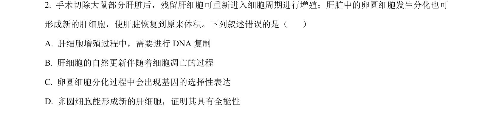
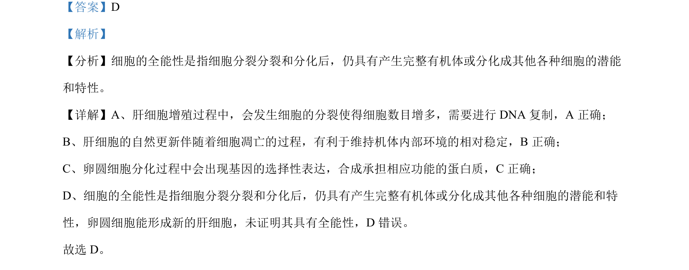

考点：细胞增殖 DNA复制 细胞凋亡 基因选择性表达 细胞全能性

该题考查细胞增殖、凋亡、分化及全能性等基本概念辨析

📄 原 PDF 第 2 页：
素材/真题/吉林/2008-2024·（吉林）生物高考真题/2024年高考生物试卷（辽宁）（解析卷）.pdf
【答案】D 【解析】 【分析】细胞的全能性是指细胞分裂分裂和分化后，仍具有产生完整有机体或分化成其他各种细胞的潜能 和特性。 【详解】A、肝细胞增殖过程中，会发生细胞的分裂使得细胞数目增多，需要进行 DNA 复制，A 正确； B、肝细胞的自然更新伴随着细胞凋亡的过程，有利于维持机体内部环境的相对稳定，B正确； C、卵圆细胞分化过程中会出现基因的选择性表达，合成承担相应功能的蛋白质，C正确； D、细胞的全能性是指细胞分裂分裂和分化后，仍具有产生完整有机体或分化成其他各种细胞的潜能和特 性，卵圆细胞能形成新的肝细胞，未证明其具有全能性，D 错误。 故选 D。